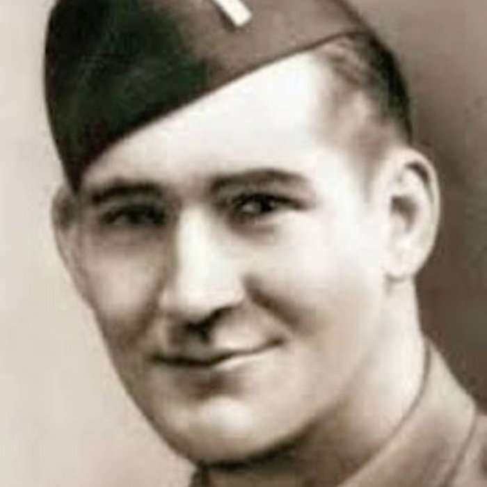

Become a patron, and you can listen to this song and every song I've written. Become a patron

Nov 5, 2026
The Road to Hamelin
Holyoke's Raymond Beaudoin and his last day near Hamelin, 1945
Raymond Beaudoin was born in Holyoke in 1918, a mill-town kid who grew up along the canals.
On April 6, 1945, with the war nearly over, his platoon was pinned down in an open field near Hamelin, Germany, the town of the Pied Piper story. He kept his men digging in under fire, then went forward alone so they could get through. He was twenty-six, and he received the Medal of Honor for that day.
I wrote this one because in the old tale the piper led the children away, and Raymond led his men home.
"But a Holyoke boy walked out in front so his men could stay, / And he never saw the Weser on that April day."
Want a song like this for your town, group or family? Here's how commissions work.